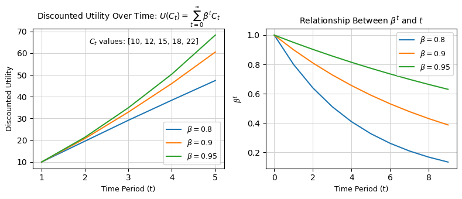

# Model 5: 折现效用函数
import numpy as np
import matplotlib.pyplot as plt
# 定义折现效用函数
def discount_utility(C, beta):
return np.sum(beta**np.arange(len(C)) * C)
# 生成消费序列
C = np.array([10, 12, 15, 18, 22])
beta_values = [0.8, 0.9, 0.95]
# 创建图形
fig, axes = plt.subplots(1, 2, figsize=(8, 3.5)) # 设置左右图布局和尺寸
# 左图：折现效用函数随时间变化
for beta in beta_values:
discounted_utilities = [
discount_utility(C[:t+1], beta) for t in range(len(C))
]
axes[0].plot(
range(1, len(C)+1), discounted_utilities,
label=rf'$\beta = {beta}$'
)
axes[0].set_title(
r'Discounted Utility Over Time: $U(C_t) = \sum_{t=0}^\infty \beta^t C_t$',
fontsize=10
)
axes[0].set_xlabel('Time Period (t)', fontsize=9)
axes[0].set_ylabel('Discounted Utility', fontsize=9)
axes[0].set_xticks(range(1, 6))
axes[0].set_xticklabels(['1', '2', '3', '4', '5'])
axes[0].legend(fontsize=9)
axes[0].grid(color='lightgray')
axes[0].text(
2.1, 65, r'$C_t$ values: [10, 12, 15, 18, 22]',
fontsize=9, horizontalalignment='left', verticalalignment='center'
)
# 右图：$\beta^t$ 与 $t$ 的关系
t = np.arange(0, 10) # 时间范围
for beta in beta_values:
beta_t = beta**t
axes[1].plot(t, beta_t, label=rf'$\beta = {beta}$')
axes[1].set_title(
r'Relationship Between $\beta^t$ and $t$', fontsize=10
)
axes[1].set_xlabel('Time Period (t)', fontsize=9)
axes[1].set_ylabel(r'$\beta^t$', fontsize=9)
axes[1].legend(fontsize=9)
axes[1].grid(color='lightgray')
# 自动调整布局
plt.tight_layout()
# 保存图片
output_dir = r'D:\JG\助教推文提交\2020助教推文\_00lian_blogs\Figs'
FigName = 'model_marginal_decrease_05.png'
os.makedirs(output_dir, exist_ok=True)
plt.savefig(os.path.join(output_dir, FigName), dpi=150, bbox_inches='tight')
# 显示图形
plt.show()